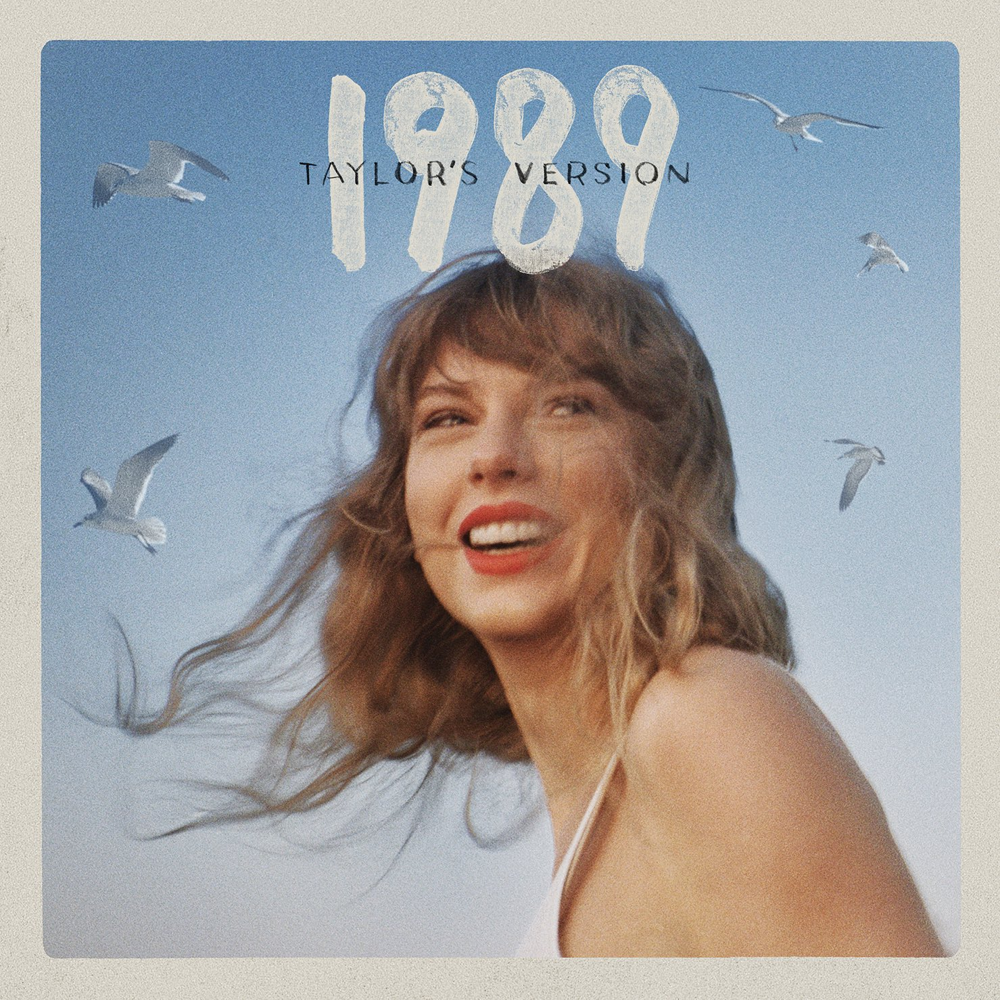
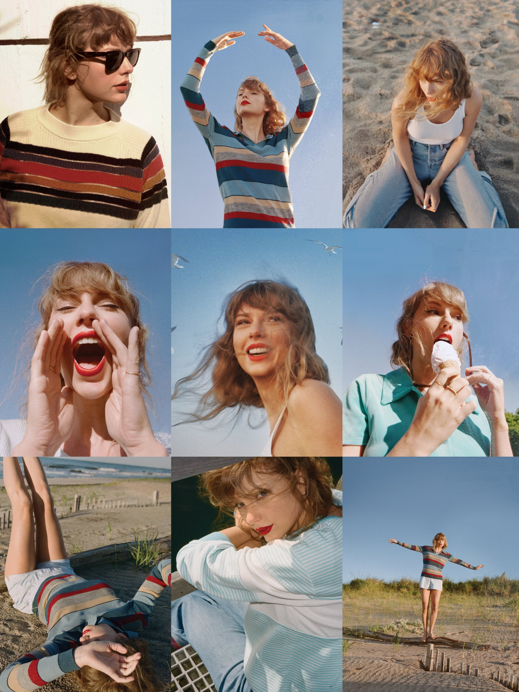
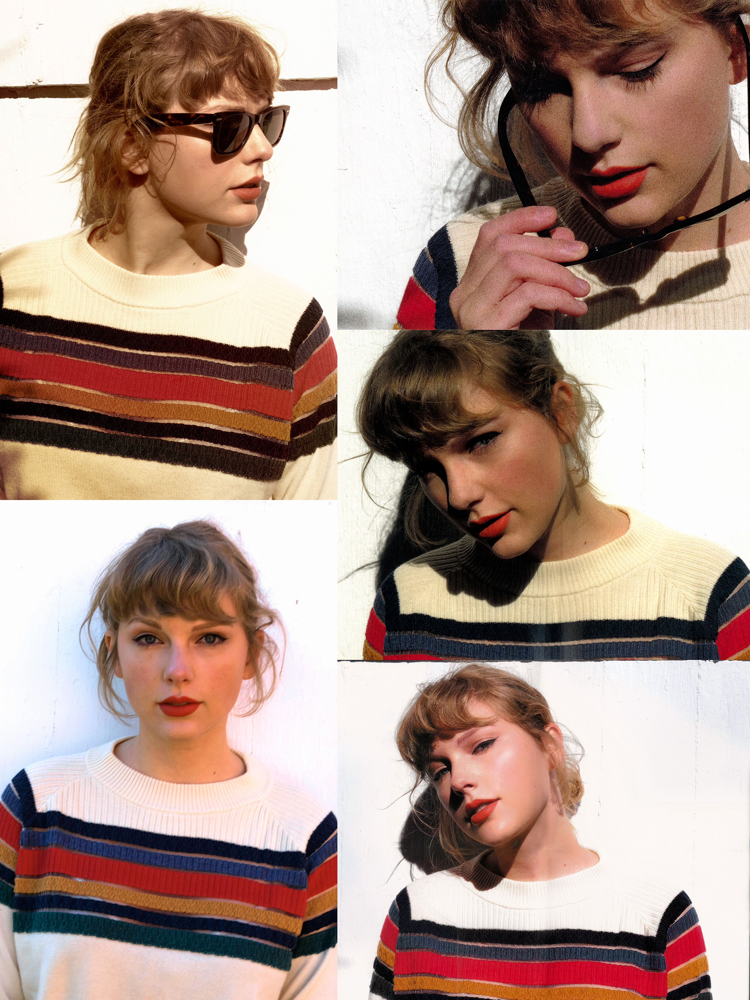

1989 (Taylor's Version) is the fourth re-recorded album by the American singer-songwriter Taylor
Swift.
It is a re-recording of Swift's fifth studio album, 1989 (2014), and was released on October 27,
2023,
by Republic Records. The album is part of Swift's ongoing response to a 2019 dispute regarding the
masters of her back catalog. It was announced at the final Los Angeles show of the Eras Tour on
August
9, 2023.
A 1980s-inspired synth-pop album, 1989 (Taylor's Version) is characterized by upbeat arrangements of
synthesizers and percussion. It contains re-recorded versions of the 16 songs from 1989's deluxe
edition
and five previously unreleased "From the Vault" tracks.[a] Swift, Jack Antonoff, and Christopher
Rowe
produced the majority of the album; Ryan Tedder, Noel Zancanella, Shellback, and Imogen Heap
reprised
their production roles. Extended editions of the album additionally feature the re-recorded versions
of
the One Chance soundtrack song "Sweeter than Fiction" (2013) and the Kendrick Lamar remix of "Bad
Blood"
(2015).
Music critics praised 1989 (Taylor's Version), with emphasis on the production, Swift's vocals, and
the
vault tracks. Commercially, it earned the biggest streaming day for an album in 2023 on Spotify and
of
all time on Amazon Music. The album topped record charts in Australia, Canada, and European
territories
including France, Germany, Italy, Spain, and the United Kingdom. In the United States, 1989
(Taylor's
Version) marked Swift's 13th number-one album on the Billboard 200, the biggest sales week of her
career
to that point, and her record-extending sixth album to sell over one million first-week copies.
Seven of
its songs concurrently became top-10 entries on the Billboard Hot 100, with the vault tracks "Is It
Over
Now?", "Now That We Don't Talk", and "'Slut!'" occupying the top three spots.

- "'Slut!'"
- "Say Don't Go"
- "Now That We Don't Talk"
- "Suburban Legends"
- "Is It Over Now?"

